Sampler Data Structures
Yamaha A-series containers store sampler objects as payload files. axklib reads the container layer first, then decodes these shared object payloads in the same way for SFS hard-disk images, FAT12 floppy images, CD-ROM ISO images, standalone object files, and directory scans.

Shared Object Header
Supported current object payloads begin with:
FSFSDEV3SPLX<type>
Header fields used by axklib:
| Offset | Size | Type | Field | Meaning |
|---|---|---|---|---|
0x00 |
12 | ASCII | magic | FSFSDEV3SPLX. |
0x0c |
4 | ASCII | type | Object type tag. |
0x10 |
4 | u32be | header_size | Object header size. For SMPL exact export, this is the stored waveform byte start. |
0x14 |
4 | u32be | unknown_0x14 | Preserved diagnostic value. |
0x18 |
4 | u32be | record_size_or_header_used | Object-specific compact-record or header-size value surfaced as a raw field. |
0x1c |
4 | u32be | payload_bytes_0x1c | Object payload byte-count field. For SMPL, exact export reads this many stored waveform bytes. |
0x20 |
4 | u32be | payload_bytes_0x20 | Second object payload byte-count field surfaced for diagnostics. |
0x28 |
2 | u16be | sample_rate_guess | SMPL sample-rate field. Empty for other types. |
0x2a |
2 | u16be | bytes_per_sample_guess | SMPL stored sample width. Empty for other types. |
0x32 |
16 | ASCII | name_guess | Object header name, trimmed of trailing NUL and spaces. |
The header parser requires at least 0x42 bytes. Invalid ASCII bytes in names
are replaced with ?. Empty or padded names are represented as empty strings by
some helper functions and as fallback display names by user-facing renderers.
Object Type Tags
| Type | Public role |
|---|---|
SMPL |
Physical waveform storage object. Exact mono WAV export reads this level. |
SBNK |
Sample Bank or member object. Stores sampler-visible member parameters and links to physical waveform storage. |
SBAC |
Sample Bank Group object. User-facing trees render it as B <name>. |
PROG |
Program object, Program display name, effects, controller data, and assignment rows. |
SEQU |
Sequence object. Currently surfaced as an object identity and tree entry. |
PRF3 |
Profile/preference-style object. Currently surfaced as an object identity; type-specific fields are not public yet. |
| other known tags | Recognized by low-level helpers, but not loaded as normal public objects unless a container reader explicitly supports them. |
Container Filename Versus Payload Identity
Every object file is complete from byte 0x00; container allocation does not
replace or remove the shared object header. The container filename locates the
file, while the four-byte tag at payload offset 0x0c determines its type and
the embedded header supplies its sampler object name.
| Container | Placement filename | Type and display-name source |
|---|---|---|
| FAT12 floppy | DOS 8.3 name such as AUTHORED.001 |
FSFSDEV3SPLX<type> and embedded object name. A numeric extension is not a type code. |
| CD-ROM ISO | <group>/Fnnn/<type>/Fnnn; category 0000 maps display names to files |
Embedded type and name remain authoritative. The category name and catalog are independently checked placement metadata. |
| Standalone file | Host filename chosen by the caller | Entire file begins with the shared magic and type tag. |
| SFS image | SFS directory record and object ID rather than a host filename | Embedded type and name, with SFS placement retained separately. |
SMPL and SBNK have variable total file sizes. Consumers must use the
big-endian length and offset fields in the object rather than inferring payload
boundaries from a FAT cluster count, ISO extent padding, or an Fnnn name.
SEQU and PRF3 can be inventoried and transferred as complete known-type
payloads, but their type-specific inner formats are not part of the current
public decoder contract.
AxklibObject Identity
Every loaded object is represented as AxklibObject. The public identity has
three parts:
| Area | Fields | Meaning |
|---|---|---|
| Container | source_image, kind, scope_key |
Which input and container scope produced the object. |
| Object reference | object_key, partition_index, sfs_id, fat_file, payload_offset, payload_size |
Stable object key and physical placement hints. |
| Sampler data | object_type, name, payload, header, quality, metadata |
Decoded object identity, raw bytes, and container-specific metadata. |
Container-specific placement metadata is documented in the format pages:
| Container | Placement fields |
|---|---|
| SFS | partition index, SFS ID, payload offset, payload size, scope key. |
| FAT12 floppy | FAT filename, root directory offset, first cluster, cluster count, file size, object offset. |
| CD-ROM ISO | raw ISO path, group/volume labels, extent sector, data offset, file size, loader-quality fields. |
SMPL: Physical Waveform Object
SMPL objects are the physical waveform-storage level. Exact export writes one
mono WAV per decoded physical SMPL object. Stereo rendering is a separate
operation driven by SBNK relationships.
Current compact metadata fields:
| Offset | Size | Type | Field |
|---|---|---|---|
0x28 |
2 | u16be | sample_rate_guess |
0x2a |
2 | u16be | bytes_per_sample_guess |
0x30 |
variable | bytes | compact record, reported as current_smpl_compact_record_hex |
0x54 |
16 | ASCII | source_wave_name_guess |
0x6c |
4 | u32be | smpl_group_id_0x06c |
0x78 |
4 | u32be | smpl_link_id_0x078 |
0x7c |
2 | u16be | sample_rate_duplicate_0x07c |
0x7e |
1 | u8 | root_key_midi_note_guess |
0x7f |
1 | s8 | fine_tune_cents_guess |
0x85 |
1 | u8 | loop_mode_candidate_0x085 |
0x92 |
4 | u32be | wave_length_frames_0x092 |
0x96 |
4 | u32be | loop_start_frame_0x096 |
0x9a |
4 | u32be | loop_length_frames_0x09a |
Derived loop values:
loop_end_frame_inclusive_guess = loop_start + loop_length - 1
loop_end_frame_exclusive_guess = loop_start + loop_length
loop_end_frame_a4000_ui_guess = loop_start + loop_length
Loop-mode display values currently surfaced by axklib:
| Raw | Label |
|---|---|
0 |
--> |
1 |
->0 |
2 |
->0-> |
3 |
<-- |
4 |
One-> |
5 |
One<- |
PCM export mapping:
| Stored width | Stored bytes | WAV bytes |
|---|---|---|
2 |
16-bit stored samples in big-endian byte order | Byte-swapped to little-endian 16-bit WAV PCM. |
1 |
8-bit PCM | Copied directly to WAV frames. |
2 with alternating-byte compatibility pattern |
Alternating filler bytes with useful high-byte lane | Useful lane is converted to unsigned 8-bit WAV frames and remains a read/export compatibility case. |
header_size is the start offset of stored waveform bytes inside the SMPL
payload. payload_bytes_0x1c is the stored byte count read by exact export.
Generated images may store a short compatibility tail after the logical waveform
frames. In that case the stored byte count includes the tail, while
wave_length_frames_0x092 and loop_length_frames_0x09a describe the logical
sample window.
When the alternating-byte compatibility pattern is detected, audio APIs set
Waveform.alternating_byte_payload_detected and sidecars write
alternating_byte_payload_detected. In that case stored_payload_transform is
alternating-byte-signed-high-byte, exactness_status is
alternating-byte-compatibility-export, and the WAV contains the useful lane as
8-bit PCM. This is a read/export compatibility path; it is not a normal
write-support format.
SBNK: Sample Bank Or Member Object
SBNK objects are sampler-visible sample-bank/member objects. They link to
physical waveform storage and carry most sample/member parameters.
Member Link Fields
| Offset | Size | Type | Field |
|---|---|---|---|
0x078 |
16 | ASCII | left member sample name |
0x088 |
16 | ASCII | right member sample name |
0x0a0 |
4 | u32be | left SMPL link ID |
0x0a4 |
4 | u32be | right SMPL link ID |
0x0c0 |
4 | u32be | linked Programs 001-032 bitmap |
0x0c4 |
4 | u32be | linked Programs 033-064 bitmap |
0x0c8 |
4 | u32be | linked Programs 065-096 bitmap |
0x0cc |
4 | u32be | linked Programs 097-128 bitmap |
The ordinary stereo layout uses the left and right member link fields on one
SBNK. Some source media instead stores stereo as two sibling SBNK objects
under the same SBAC group, with sampler-facing names ending in -L and -R.
In that layout each sibling still uses its own left-member SMPL link. axklib
keeps both SBNK objects and both physical SMPL exports, then writes an
additive rendered stereo WAV when the sibling names and links are known and
compatible.
Program-link bitmap decoding:
for word_index in 0..3:
base_program = word_index * 32 + 1
for bit_index in 0..31:
if word & (1 << bit_index):
linked_program = base_program + bit_index
Sample Parameter Window
The sample parameter window starts at 0x0a8. The table below lists the public
field names currently exposed by the decoder.
| Offset | Type | Field |
|---|---|---|
0x0d0 |
u8 | sample_flags_0x0d0 |
0x0d1 |
u8 | mapout_flags_0x0d1 |
0x0d2 |
u8 | midi_receive_channel_0x0d2 |
0x0d3 |
u8 | pitch_bend_type_0x0d3 |
0x0d4 |
u8 | pitch_bend_range_0x0d4 |
0x0d5 |
u8 | coarse_tune_0x0d5 |
0x0d6 |
u8 | left_root_key_0x0d6 |
0x0d7 |
u8 | right_root_key_0x0d7 |
0x0d8 |
u16be | left_sample_rate_0x0d8 |
0x0da |
u16be | right_sample_rate_0x0da |
0x0dc |
s8 | left_fine_tune_cents_0x0dc |
0x0dd |
s8 | right_fine_tune_cents_0x0dd |
0x0de |
u16be | pitch_base_word_0x0de |
0x0e0 |
u16be | secondary_pitch_base_word_0x0e0 |
0x0e2 |
u8 | key_range_high_0x0e2 |
0x0e3 |
u8 | key_range_low_0x0e3 |
0x0e6 |
u16be | loop_tempo_0x0e6 |
Key-range values 0..127 are concrete MIDI key limits. The sampler also
uses direction-specific sentinel bytes for the UI value Orig: raw 128 in
key_range_high_0x0e2 and raw 255 in key_range_low_0x0e3. axklib
preserves those raw values and exposes a resolved_key_range projection in
volume graphs. The projection resolves Orig to the member root key so export
formats with only concrete MIDI limits can emit bounded zones. Generated direct
single-member SBNK objects have been hardware-tested with concrete root key
and key-range values. For a single-member bank, an empty right member name means
there is no active right member; the generated writer treats right-member fields
as inactive compatibility fields rather than as a second playback region.
| Offset | Type | Field |
|---|---|---|
0x0e8 |
u32be | left_wave_start_address_0x0e8 |
0x0ea |
u16be | left_wave_start_low16_0x0ea |
0x0ec |
u32be | right_wave_start_address_0x0ec |
0x0ee |
u16be | right_wave_start_low16_0x0ee |
0x0f0 |
u32be | left_wave_length_frames_0x0f0 |
0x0f4 |
u32be | right_wave_length_frames_0x0f4 |
0x0f8 |
u32be | left_loop_start_frame_0x0f8 |
0x0fc |
u32be | right_loop_start_frame_0x0fc |
0x100 |
u32be | left_loop_length_frames_0x100 |
0x104 |
u32be | right_loop_length_frames_0x104 |
0x108 |
u8 | start_address_velocity_sensitivity_0x108 |
0x109 |
u8 | filter_type_0x109 |
0x10a |
u8 | filter_cutoff_0x10a |
0x10b |
u8 | filter_q_width_0x10b |
0x10c |
u8 | filter_cutoff_key_scaling_break1_0x10c |
0x10d |
u8 | filter_cutoff_key_scaling_break2_0x10d |
0x10e |
u8 | filter_cutoff_key_scaling_level1_0x10e |
0x10f |
u8 | filter_cutoff_key_scaling_level2_0x10f |
0x110 |
u8 | filter_cutoff_velocity_sensitivity_0x110 |
0x111 |
u8 | filter_q_width_velocity_sensitivity_0x111 |
0x112 |
u8 | expand_detune_0x112 |
0x113 |
u8 | expand_dephase_0x113 |
0x114 |
u8 | expand_width_0x114 |
0x115 |
u8 | random_pitch_0x115 |
0x116 |
u8 | sample_level_0x116 |
Generated direct single-member SBNK objects have been hardware-tested with
sample level values in the normal 0..127 range. The writer also carries a
conservative current-format default set for fields that are not yet surfaced as
public write inputs, including filter, envelope, LFO, output, portamento, and
sample-control defaults for this direct single-member scope.
The Yamaha Sample Parameter table labels decimal offsets 0170..0179 as
reserved. With the current 0x0a8 Sample Parameter base, those reserved bytes
map to SBNK+0x152..0x15b. Hardware-tested generated direct single-member
SBNK objects require compatible values in this reserved range: 0x152..0x156
gates audible playback, and 0x158..0x15b restores the normal unfiltered tone
for this writer scope.
| Offset | Type | Field |
|---|---|---|
0x117 |
u8 | pan_0x117 |
0x118 |
u8 | velocity_low_limit_0x118 |
0x119 |
u8 | velocity_offset_0x119 |
0x11a |
u8 | velocity_range_high_0x11a |
0x11b |
u8 | velocity_range_low_0x11b |
0x11c |
u8 | level_scaling_break1_0x11c |
0x11d |
u8 | level_scaling_break2_0x11d |
0x11e |
u8 | level_scaling_level1_0x11e |
0x11f |
u8 | level_scaling_level2_0x11f |
0x120 |
u8 | velocity_sensitivity_0x120 |
0x121 |
u8 | alternate_group_0x121 |
0x122 |
u8 | sample_eq_frequency_0x122 |
0x123 |
u8 | sample_eq_gain_0x123 |
0x124 |
u8 | sample_eq_width_0x124 |
0x125 |
u8 | filter_cutoff_distance_0x125 |
0x126 |
u8 | feg_attack_rate_0x126 |
0x127 |
u8 | feg_decay_rate_0x127 |
0x128 |
u8 | feg_release_rate_0x128 |
0x129 |
u8 | feg_init_level_0x129 |
0x12a |
u8 | feg_attack_level_0x12a |
0x12b |
u8 | feg_sustain_level_0x12b |
0x12c |
u8 | feg_release_level_0x12c |
0x12d |
u8 | feg_rate_key_scaling_0x12d |
0x12e |
u8 | feg_rate_velocity_sensitivity_0x12e |
0x12f |
u8 | feg_attack_level_velocity_sensitivity_0x12f |
0x130 |
u8 | feg_level_velocity_sensitivity_0x130 |
0x131 |
u8 | peg_attack_rate_0x131 |
0x132 |
u8 | peg_decay_rate_0x132 |
0x133 |
u8 | peg_release_rate_0x133 |
0x134 |
u8 | peg_init_level_0x134 |
0x135 |
u8 | peg_attack_level_0x135 |
0x136 |
u8 | peg_sustain_level_0x136 |
0x137 |
u8 | peg_release_level_0x137 |
0x138 |
u8 | peg_rate_key_scaling_0x138 |
0x139 |
u8 | peg_rate_velocity_sensitivity_0x139 |
0x13a |
u8 | peg_level_velocity_sensitivity_0x13a |
0x13b |
u8 | peg_range_0x13b |
0x13c |
u8 | aeg_attack_rate_0x13c |
0x13d |
u8 | aeg_decay_rate_0x13d |
0x13e |
u8 | aeg_release_rate_0x13e |
0x141 |
u8 | aeg_sustain_level_0x141 |
0x143 |
u8 | aeg_attack_mode_0x143 |
0x144 |
u8 | aeg_rate_key_scaling_0x144 |
0x145 |
u8 | aeg_rate_velocity_sensitivity_0x145 |
0x146 |
u8 | lfo_wave_0x146 |
0x147 |
u8 | lfo_speed_0x147 |
0x148 |
u8 | lfo_delay_time_0x148 |
0x149 |
u8 | lfo_flags_0x149 |
0x14a |
u8 | lfo_cutoff_mod_depth_0x14a |
0x14b |
u8 | lfo_pitch_mod_depth_0x14b |
0x14c |
u8 | lfo_amp_mod_depth_0x14c |
0x151 |
s8 | filter_gain_0x151 |
0x152..0x156 |
5 bytes | single_member_reserved_playback_default_0x152_0x156 |
0x158..0x15b |
4 bytes | single_member_reserved_tone_default_0x158_0x15b |
0x15c |
u32be | wave_end_address_0x15c |
0x160 |
u32be | loop_end_address_0x160 |
0x17c |
u8 | velocity_xfade_high_0x17c |
0x17d |
u8 | velocity_xfade_low_0x17d |
0x17e |
u8 | output1_0x17e |
0x17f |
u8 | output1_level_0x17f |
0x180 |
u8 | output2_0x180 |
0x181 |
u8 | output2_level_0x181 |
0x182 |
u8 | sample_portamento_type_0x182 |
0x183 |
u8 | sample_portamento_rate_0x183 |
0x184 |
u8 | sample_portamento_time_0x184 |
Sample control records are six 4-byte records at:
record_offset = 0x0a8 + 0xbc + (record_index - 1) * 4
Each record stores device_u8, function_u8, type_u8, and signed range_s8.
SBAC: Sample Bank Group Object
SBAC objects are shown as B <name> Sample Bank Groups in user-facing trees.
They contain member rows that point by name to SBNK objects.
| Offset | Size | Type | Field |
|---|---|---|---|
0x040..0x11f |
224 | bytes | sample_parameter_block_raw_0x040_0x11f |
0x120..0x12b |
12 | 3 x u32be | value_enable_words_0x120_0x12b |
0x130 |
1 | u8 | bulk_assigned_sample_count_0x130 |
0x144 |
1 | u8 | active_slot_count_0x144 |
0x14c |
variable | rows | First SBAC member slot row. |
SBAC value-enable bitmap decoding:
for word_index in 0..2:
base_p2 = word_index * 32
for bit in 0..31:
if word & (1 << bit):
enabled_sample_parameter_p2 = base_p2 + bit
SBAC slot row layout, stride 0x14:
| Row offset | Size | Type | Field |
|---|---|---|---|
+0x00 |
16 | ASCII | slot SBNK name |
+0x10 |
4 | u32be | raw_handle_0x10 |
The current reader uses active_slot_count_0x144 to decide how many rows to
read, capped by the payload size. The 32-bit handle is retained as a diagnostic
field. It is opaque source-local state rather than a portable object identity.
Package export declares each active row handle as a relocation, and package
import writes the hardware-proven zero form while preserving the row order and
resolved member name. Target matching uses exact name, object type, and local
placement before it emits a resolved relationship.
PROG: Program Object
PROG objects represent Program slots. The object header name is normally a
three-digit slot ID. The displayed Program name is read from payload
0x078..0x07f; if that field is empty, axklib displays Pgm NNN for slots
1 through 128.
Program Common Fields
| Offset | Size | Type | Field |
|---|---|---|---|
0x068..0x077 |
16 | bytes | raw_0x068_0x077 |
0x080 |
1 | u8 | program_flags_ad_source_effect_connection_lfo_sync_0x080 |
0x081 |
1 | u8 | program_lfo_cycle_wave_initial_phase_0x081 |
0x082..0x085 |
4 | bytes | raw_0x082_0x085 |
0x086 |
1 | u8 | raw_0x086_u8 |
0x087..0x08a |
4 | bytes | raw_0x087_0x08a |
0x08f |
1 | u8 | program_lfo_reset_midi_channel_0x08f |
0x090 |
1 | u8 | program_portamento_type_0x090 |
0x091 |
1 | u8 | program_portamento_rate_0x091 |
0x092 |
1 | u8 | program_portamento_time_0x092 |
0x093 |
1 | u8 | sample_and_hold_speed_0x093 |
0x094 |
1 | u8 | program_lfo_tempo_0x094 |
0x095 |
1 | u8 | program_lfo_reset_note_0x095 |
0x096..0x097 |
2 | bytes | raw_0x096_0x097 |
0x110..0x11f |
16 | 4 records | Program controller records. |
0x358..0x367 |
16 | bytes | control_tail_raw_0x358_0x367 |
Program controller records are 4-byte rows: device_u8, function_u8,
type_u8, and signed range_s8.
Program Effect Blocks
Program effect blocks start at 0x098, 0x0c0, and 0x0e8. Each block is
0x28 bytes.
| Block offset | Size | Type | Field |
|---|---|---|---|
+0x00 |
1 | u8 | active_or_bypass_u8 |
+0x01 |
1 | u8 | input_level_u8 |
+0x02 |
1 | u8 | output_level_u8 |
+0x03 |
1 | s8 | pan_s8 |
+0x04 |
1 | u8 | output_u8 |
+0x05 |
1 | s8 | width_raw_s8 |
+0x06 |
1 | u8 | type_u8 |
+0x07 |
1 | u8 | type_mirror_or_reserved_u8 |
+0x08 |
32 | 16 x u16be | effect parameter words |
width_display is calculated as width_raw_s8 + 63 when the result is in the
accepted display range.
Program Assignment Rows
Program assignment rows start at 0x120 and use a 0x38 byte stride.
| Row offset | Size | Type | Field |
|---|---|---|---|
+0x00 |
16 | ASCII | assignment_name |
+0x10 |
4 | u32be | assignment_raw_handle_or_selector |
+0x14 |
1 | u8 | assigned_object_type |
+0x15 |
1 | u8 | midi_receive_channel_assign |
+0x16 |
1 | u8 | level_offset |
+0x17 |
1 | u8 | velocity_sensitivity |
+0x18 |
1 | u8 | pan_offset |
+0x19 |
1 | u8 | velocity_xfade_high_offset |
+0x1a |
1 | u8 | fine_tune_offset |
+0x1b |
1 | u8 | velocity_xfade_low_offset |
+0x1c |
1 | u8 | coarse_tune_offset |
+0x1d |
1 | u8 | output1 |
+0x1e |
1 | u8 | key_limit_high |
+0x1f |
1 | u8 | key_limit_low |
+0x20 |
1 | u8 | key_range_shift |
+0x21 |
1 | u8 | velocity_limit_high |
+0x22 |
1 | u8 | velocity_limit_low |
+0x23 |
1 | u8 | portamento_mono_key_xfade_flags |
+0x24 |
1 | u8 | alternate_group_number |
+0x25 |
1 | u8 | aeg_attack_rate_offset |
+0x26 |
1 | u8 | aeg_decay_rate_offset |
+0x27 |
1 | u8 | aeg_release_rate_offset |
+0x28 |
1 | u8 | output2 / active-state gate |
+0x29 |
1 | u8 | filter_cutoff_offset |
+0x2a |
1 | u8 | filter_gain_offset |
For named kind-0x10 direct-SBNK and kind-0x11 SBAC assignments, the 32-bit
handle is opaque source-local state rather than a portable object identity.
Package export declares it as a relocation, and package import writes the
hardware-proven zero form while preserving the assignment ordinal, target name,
kind, channel, and remaining row bytes. Empty rows and other assignment kinds
are not covered by this relocation profile.
| Row offset | Size | Type | Field |
|---|---|---|---|
+0x2b |
1 | u8 | filter_q_width_offset |
+0x2c |
1 | u8 | cutoff_distance_offset |
+0x2d..0x2e |
2 | bytes | reserved_0045_0046 |
+0x2f |
1 | u8 | output1_level_offset |
+0x30..0x31 |
2 | bytes | reserved_0048_0049 |
+0x32 |
1 | u8 | output2_level_offset |
+0x33 |
1 | u8 | midi_control_on |
+0x34 |
1 | u8 | reserved_0052 |
+0x35..0x37 |
3 | bytes | reserved_0053_0055 |
Assignment kind byte mapping currently used for read-side relationship matching:
| Kind byte | Target category |
|---|---|
0x10 |
SBNK direct assignment target |
0x11 |
SBAC Sample Bank Group target |
Rch Assign display family:
Gate byte +0x28 |
Channel byte +0x15 |
Display |
|---|---|---|
0x00 |
any | off |
not 0x00 or 0xff |
any | unknown |
0xff |
0xff |
=SMP |
0xff |
0x00..0x0f |
01 through 16 |
0xff |
0x10 |
BasicRch |
0xff |
0x11..0x20 |
B01 through B16 |
Active assignment state is separate from target matching:
| State | Meaning |
|---|---|
decoded-row |
A row was decoded. |
confirmed-active |
Gate byte indicates an active Program assignment. |
confirmed-visible-off |
The inventory row is visible but Rch Assign is off. |
confirmed-duplicate-not-active |
A duplicate row exists but is not the active assignment. |
source-load-assignment |
CD-ROM source-load row matched to a target object. |
unknown |
State is not classified beyond diagnostics. |
Normal info output shows active Program children and CD-ROM source-load
children that are suitable for user-facing display. CSV and JSON relationship
reports keep all decoded rows, raw selector values, and inactive rows.
Portable-package closure has a separate preservation rule: Known named
kind-0x10 and kind-0x11 targets in confirmed-visible-off state are retained
because imported zero-handle assignments re-parse in that state and remain
loadable on hardware. confirmed-duplicate-not-active, unresolved, and
ambiguous rows remain diagnostic-only.
Relationship target matching is reported separately from active/off state. Rows
that are useful for diagnostics but should not become normal Program children use
diagnostic_category values such as visible-off-assignment,
program-link-bitmap, sbnk-member-link, or
active-assignment-missing-target.
SEQU And PRF3
SEQU and PRF3 are loaded as supported object identities when their payloads
use the shared header. Current public behavior preserves object name, type,
placement metadata, raw payload bytes, and report identity fields. Type-specific
parameter sections are not currently exposed as public fields.
Relationship Graph
The shared relationship graph connects decoded objects:
| Relationship | Meaning |
|---|---|
PROG_ASSIGNMENT_TO_SBAC |
Program assignment to a visible B <sample bank group> parent. |
PROG_ASSIGNMENT_TO_SBNK |
Program assignment directly to a Sample Bank or member. |
SBAC_SLOT_TO_SBNK |
Sample Bank Group member row. |
SBNK_LEFT_MEMBER_TO_SMPL |
Left member waveform-storage link. |
SBNK_RIGHT_MEMBER_TO_SMPL |
Right member waveform-storage link. |
Relationship row fields are documented in Report Schemas.
Exact Export Metadata
Exact export keeps physical and rendered audio separate:
| Output | Source level | Meaning |
|---|---|---|
_samples/physical/*.wav |
SMPL |
Exact mono physical waveform export. |
_samples/rendered/*.wav |
linked SBNK pair |
Interleaved stereo render when left/right members are compatible. |
| optional selection graph JSON | objects and relationships | Scoped graph metadata for objects, relationships, WAV references, quality labels, and diagnostics. |
The original SMPL objects remain represented even when a rendered stereo WAV is
created.